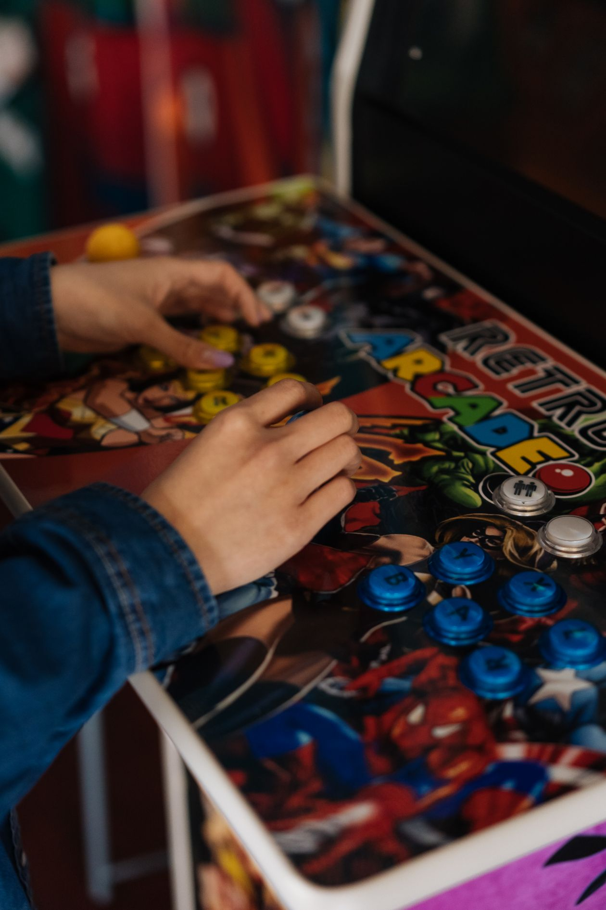

§3 · The Manual
The operator behind the glass
Hollis Crane, in one page
I learned this trade backwards: first as the person arcades called when a board died. Six years of servicing other people's cabinets — recapping monitors, tracing dead inputs, reading service manuals written by engineers who expected to be believed — before I shipped a game of my own. The servicing never really stopped; it became the method. A game I build still ships with the manual I would want to receive: the budget sheet, the service menu, the frame report.
The work since 2022: three shipped titles, two of them still patched on a schedule; six jam builds I am fond of and would never sell you; two cancellations I list in the same size type as the successes. One pair of hands throughout — collaborators are credited by name on every title, because June's music and Theo's art are not “the team” in a footnote, they are lines in the log.
The opinion I am known for locally, printed here so you don't have to discover it in a meeting: nostalgia is not a mechanic. A limited palette and a fixed timestep are disciplines that make games sharper; a scanline filter over a sloppy frame is just a costume. I have killed more features with a spreadsheet than with taste — the spreadsheet is usually right.
WORKSHOP — Sheffield, UK · Visits by appointment · The kettle is the second most reliable machine in the building

How a commission runs
What the manual won't claim
Engagement terms, in short
Booking. 40% deposit books a slot; the balance is milestone-based, and the final milestone is acceptance on real hardware — yours, not an emulator screenshot. One original-title slot runs at a time; when the register says one slot, it means one.
Credit is contractual. Every collaborator is credited by name and role in the shipped product and in this log. If your house style can't accommodate that, we are not a fit, and it's better to know now.
IP & source. Commissioned work: you own the game; I retain the right to list it in this log with its real figures and to reuse general-purpose engine code that predates the commission (itemised in the contract, nothing you paid for exclusively).
Cabinets. Twelve months parts warranty, service menu and printed manual included, first-year service visits within mainland UK included in the unit price. The abort authority is mine on frame grounds: if the sheet says the design can't hold, we redesign or we stop — see Signal Harvest, Title Log, List 3.